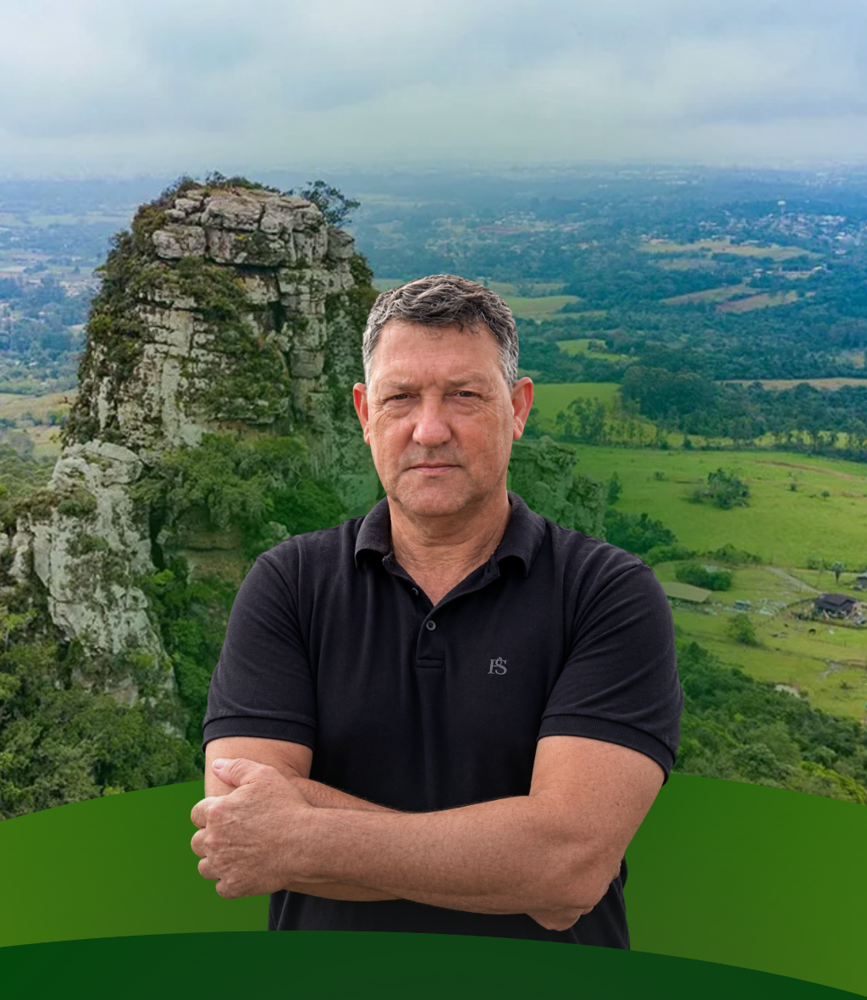

01
Saúde mais próxima
Apresente de forma clara qual problema será enfrentado, qual é a proposta e como ela pode ser encaminhada.
Ver detalhes →
EXPERIÊNCIA PARA TRABALHAR.
CORAGEM PARA TRANSFORMAR.
Conheça a história, as prioridades e as propostas de Beto Bacamarte para nossa região.

Sou Roberto Corrêa de Carvalho, conhecido carinhosamente como Beto Bacamarte, sou natural de Gravataí e construi minha trajetória marcada pela dedicação à comunidade, pelo trabalho e pelo compromisso com as pessoas. Sou Casado com a Clarice Silva e pai de dois filhos, Tiago e Thaiane, sou avô de três netos. Para mim, a família é minha principal base e fonte de inspiração. São valores como honestidade, respeito, responsabilidade e dedicação que também procuro levar para minha atuação pública.
Hoje, como Vereador, pai, avô e cidadão Gravataiense, sigo construindo minha história com o propósito de representar a população e contribuir para uma Gravataí cada vez melhor.
Escolha um tema e conheça as propostas relacionadas.
Propostas voltadas à melhoria do atendimento, acesso aos serviços de saúde e qualidade de vida da população.
Ações voltadas à prevenção, segurança pública, proteção das comunidades e melhoria da qualidade de vida.
Incentivo à educação, qualificação profissional, formação de jovens e ampliação das oportunidades.
Incentivo à geração de empregos, desenvolvimento econômico, empreendedorismo e oportunidades para os trabalhadores.
Melhorias em infraestrutura, mobilidade urbana, estradas, saneamento e desenvolvimento das cidades.
Organize aqui as principais propostas da campanha, sempre com informações objetivas e verificáveis.
Apresente de forma clara qual problema será enfrentado, qual é a proposta e como ela pode ser encaminhada.
Ver detalhes →Espaço para explicar medidas, articulações e ações relacionadas à segurança pública.
Ver detalhes →Mostre objetivos concretos para educação, qualificação e oportunidades para os jovens.
Ver detalhes →Apresente prioridades para mobilidade, obras e desenvolvimento regional.
Ver detalhes →📍 Gravataí · 19h
📍 Cachoeirinha · 18h30
Acesse os canais oficiais e acompanhe as novidades.